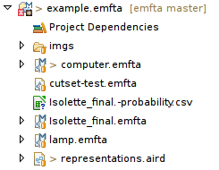
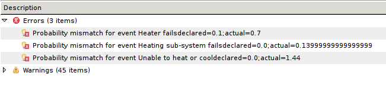

The events probability can be specified using the table view (see below). Once you specify all probabilities, you can perform two types of analysis:

To compute the probability of error events, select the event in the graphical representation and select Generate Events Probability menu.

The tool then creates a new file at the root directory of the project with a CSV file that contains the probability for all intermediate events.
To compute the probability of error events, select the event in the graphical representation and select Check Probability Consistency menu.
Probability inconsistencies are then shown in the Problem view with markers associated with the model, as shown below.
